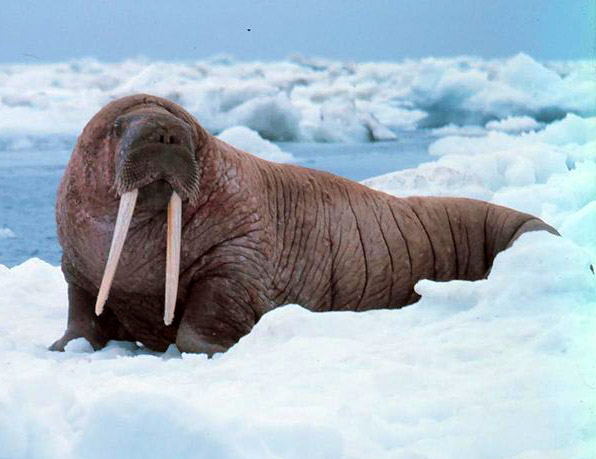

The Walrus is a large flippered marine mammal with a discontinuous distribution about the North Pole in the Arctic Ocean and subarctic seas of the Northern Hemisphere. The walrus is the only living species in the family Odobenidae and genus Odobenus. This species is subdivided into two subspecies:[2] the Atlantic walrus (O. r. rosmarus), which lives in the Atlantic Ocean, and the Pacific walrus (O. r. divergens), which lives in the Pacific Ocean.
What a tusky chonker! Click here to hide him again
